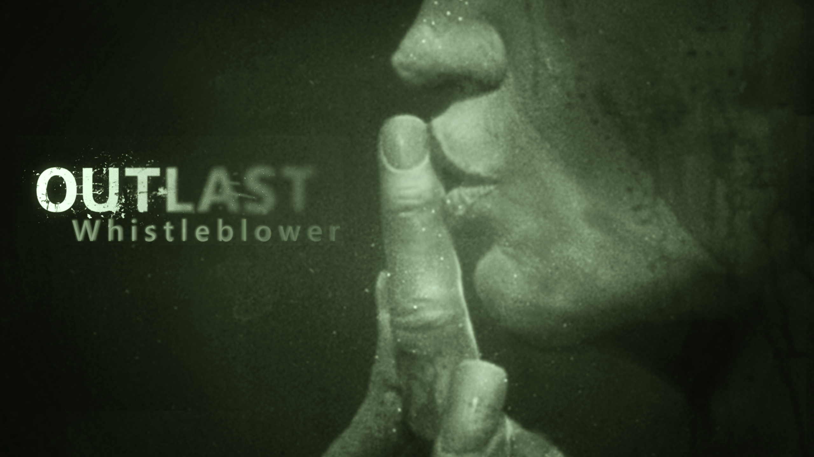
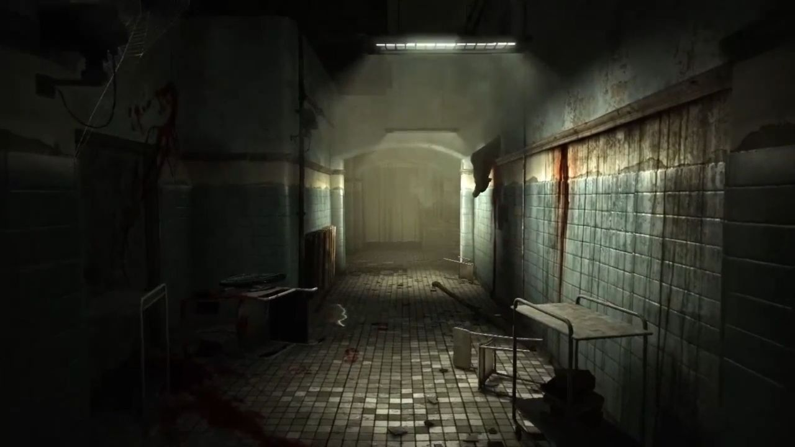

Outlast Whistleblower es el inicio del terror de la trilogía de Outlast. Este juego inicia con Waylon Parker, un ingeniero en software que trabaja para la organización Murkoff en el asilo Mount Massive para personas con problemas mentales.
Lamentablemente, Waylon presencia los abusos y experimentos inhumanos hacia los pacientes y es por eso que decide mandar un correo electrónico al famoso periodista, quien es el protagonista de Outlast 1.
Pero es descubierto por Jeremy Blaire, quien lo obliga a ser sujeto de, ni más ni menos, a los experimentos realizados por la compañía.